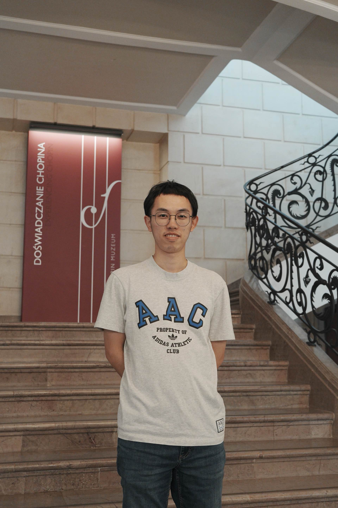

I did my Ph.D at Université de Toulouse under the supervision of Guillaume Cébron and Djalil Chafaï from 2023 to 2026. Before that, I spent one-year master in mathematics at Université de Toulouse. Prior to these, I obtained my bachelor's degree in mathematics from the University of Science and Technology of China (USTC), where I studied from 2018 to 2022.
My research focuses on non-commutative probability theory and random matrix theory. More specifically, I study large deviation principles for certain random matrices and their interpretation in terms of entropy in non-commutative probability spaces. I am particularly interested in random matrix models related to Boolean independence.